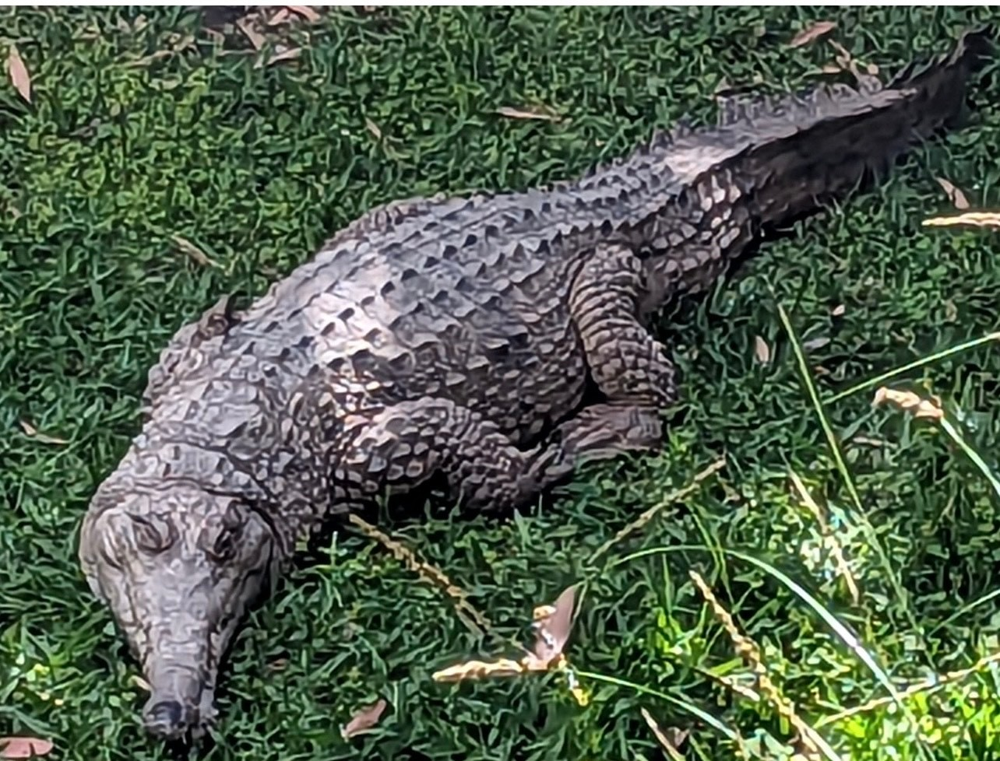
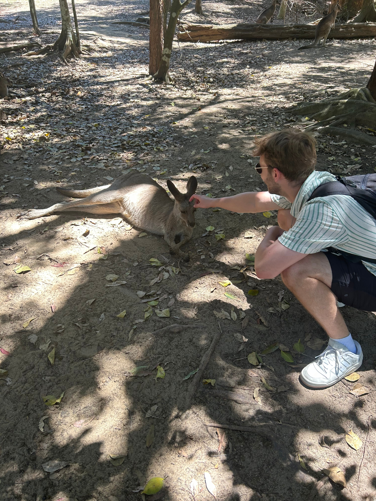
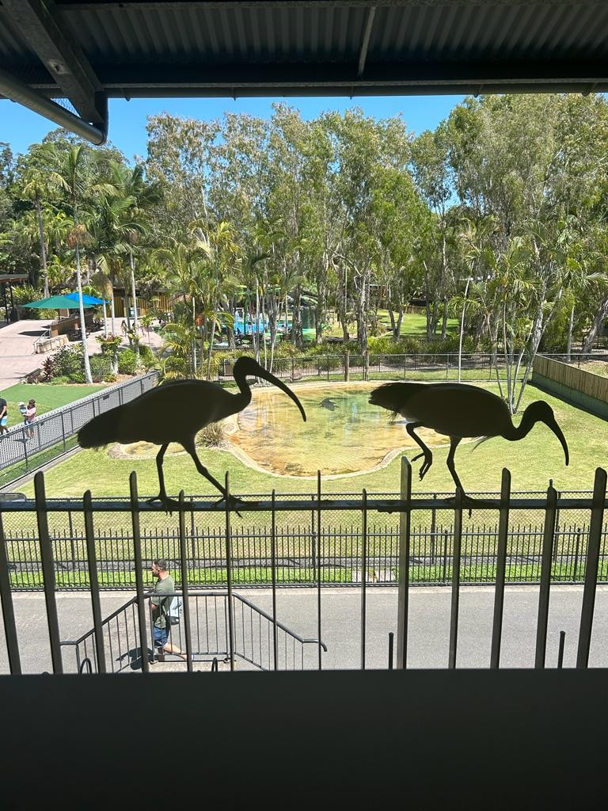
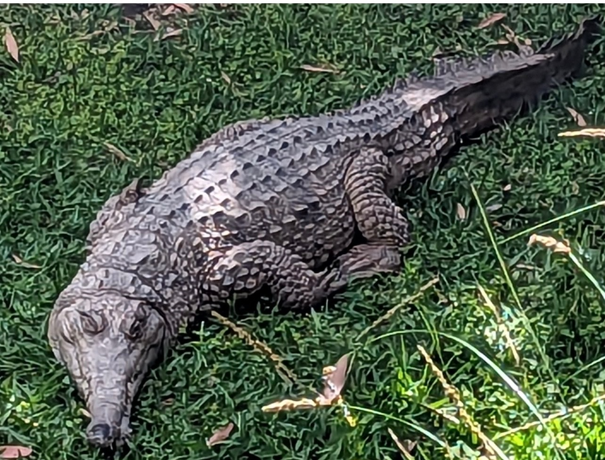
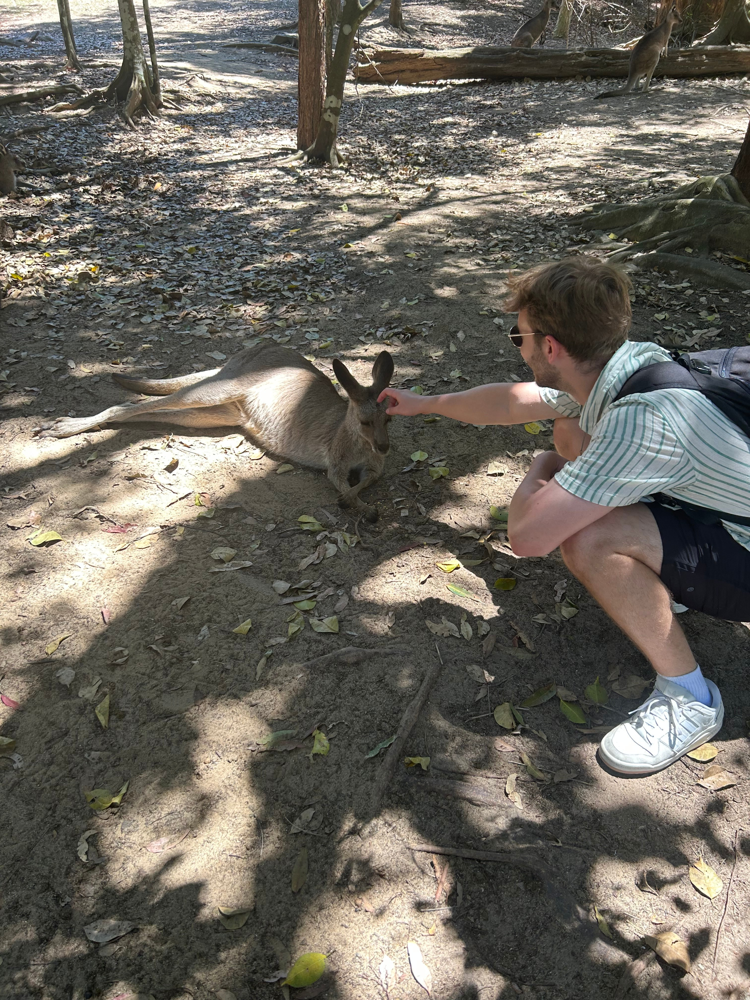
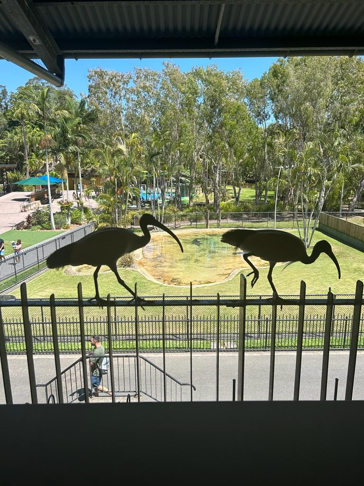

Hello hellooooo,
Welcome to a very very late weekly update for week 5 (more like weekly upLate am i right?)
SO here we go!!
We started the week in Surfers Paradise. contrary to the name, it was not paradise. Imagine Magaluf without the party scene. And cockroaches. Sam had a surfing lesson though, fun!
We cheered ourselves up with krispy kremes. Can you guess which are sams and which are mine? (hint, his look like a child picked them)
Health vibes only in Brisbane. Sam had an acai bowl and i had salad, the picture of health?
A pretty street in Bris ! It was bloody boiling there
 





We went to the Australia Zoo ! i.e. Steve Irwins zoo, one of the kangaroos tried to scratch one of our friends, yikes !! if you’ve seen those videos with kangaroos squaring up to people, you’ll know how fast we ran away
Continuing the health vibes in Brisbane, we did an ice bath! It was freezing (obviously) and we lasted less than a minute
Noosa babyyy ! The Coastal walk to the fairy pools and hells gates
see ya later alligators
Sam and Kiara xx